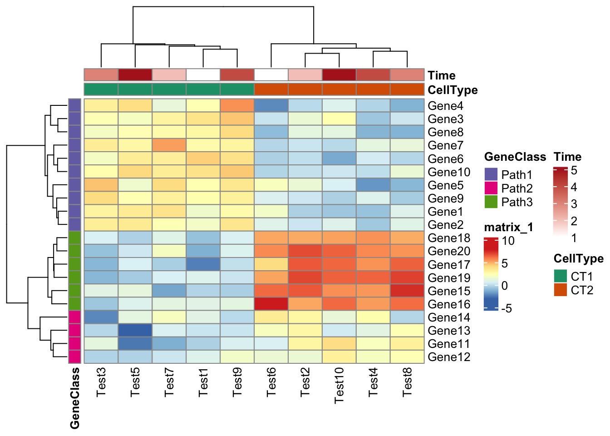
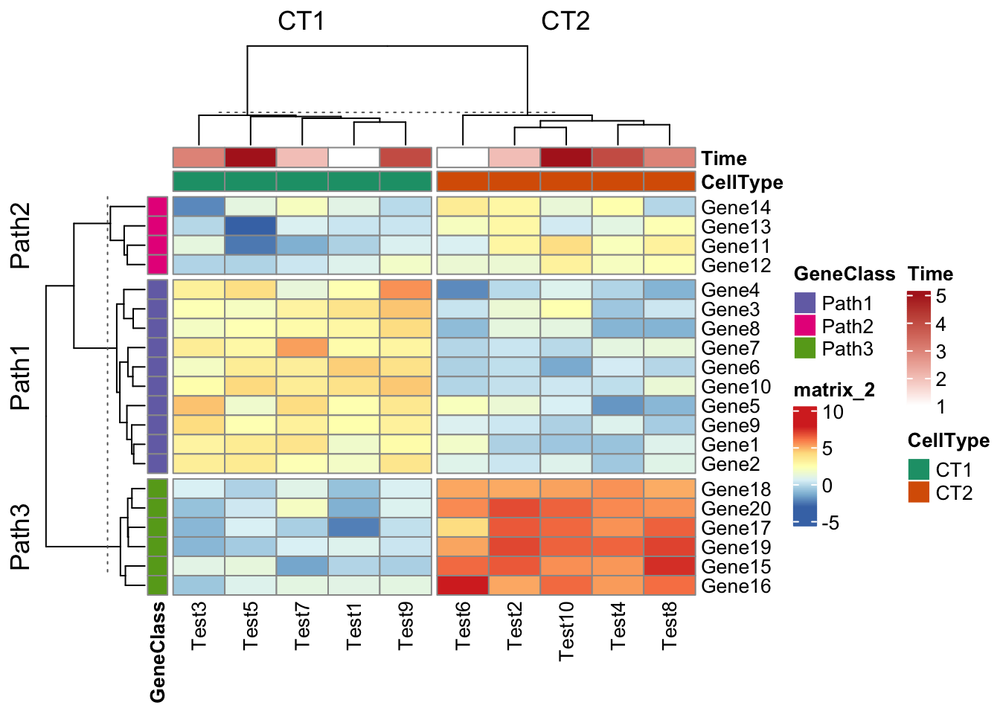
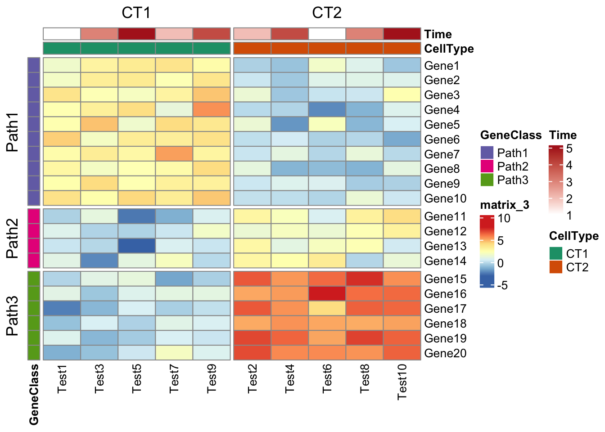

![]()
Heatmap packages
Prepare data
test <- matrix(rnorm(200), 20, 10)
test[1:10, seq(1, 10, 2)] <- test[1:10, seq(1, 10, 2)] + 3
test[11:20, seq(2, 10, 2)] <- test[11:20, seq(2, 10, 2)] + 2
test[15:20, seq(2, 10, 2)] <- test[15:20, seq(2, 10, 2)] + 4
colnames(test) <- paste("Test", 1:10, sep = "")
rownames(test) <- paste("Gene", 1:20, sep = "")
test Test1 Test2 Test3 Test4 Test5 Test6
Gene1 1.6101920 -0.36083185 2.9419856 -0.77843617 3.3601305 1.7155838
Gene2 1.7888341 0.25399548 3.2275570 -0.63279331 3.4230905 0.8322741
Gene3 3.7140276 1.38742541 2.2297897 -0.66596674 1.9400389 0.1852566
Gene4 2.3404101 -0.12534671 3.1307937 -0.27051326 3.9165792 -2.1516039
Gene5 2.4154800 1.38997339 4.6213946 -1.91931446 1.6072542 2.0194700
Gene6 4.3764934 0.01495267 1.8540463 0.41587290 3.3043292 -0.3496422
Gene7 2.5729961 0.20959449 3.3112268 1.07589995 2.7270495 -0.2211672
Gene8 2.7977074 1.13004408 1.8496947 -1.18815717 2.2768207 -0.9870381
Gene9 2.4753143 0.27392906 4.0437985 0.73601929 2.3160668 0.6751547
Gene10 3.7928631 0.08072923 2.5143368 -0.00498094 4.1076280 -0.2518542
Gene11 -0.3560912 2.86555081 1.1274958 2.04703001 -2.5874892 0.5933322
Gene12 0.7778166 1.42211819 -0.2889914 1.96542341 -0.3108358 1.4200012
Gene13 0.2092981 2.73473109 -0.1913925 1.02241547 -3.1603589 1.9805313
Gene14 0.9624349 2.80749442 -2.2040140 2.45535874 1.0724724 3.3352803
Gene15 -0.2520438 6.59794338 0.9711581 5.40530706 1.1725079 6.2781478
Gene16 0.9569997 5.09113523 -0.6873934 5.32550787 0.7611673 7.8612532
Gene17 -2.3975850 6.60513341 -1.1037555 5.51212146 0.5570226 4.0428877
Gene18 -0.8237663 5.05654057 0.5333799 5.50484026 -0.3289425 5.0955091
Gene19 0.7315109 6.95773144 -1.1014985 6.39877479 -0.5359625 5.1377011
Gene20 -1.2835494 6.87021888 -0.8186217 5.67954226 0.3043498 5.6519702
Test7 Test8 Test9 Test10
Gene1 3.6704358 0.7810713 2.59710019 -0.6639444
Gene2 2.2397840 0.8708925 3.64860275 0.7879721
Gene3 2.9355681 0.2587471 4.54197547 2.3937978
Gene4 1.2268859 -1.2187872 5.52687323 0.7331436
Gene5 3.9929190 -1.1033196 3.50401556 0.5616194
Gene6 3.1583987 -0.1998753 3.79265956 -1.4549084
Gene7 5.2525945 1.2405634 2.92927386 -0.1387731
Gene8 2.6089302 -1.2309571 4.01341245 1.0699240
Gene9 3.1017760 -0.4964436 3.08748087 -0.3586242
Gene10 3.3141882 1.3754729 4.48935332 0.2807511
Gene11 -1.3112621 3.0238229 0.64526084 3.9392547
Gene12 0.2515411 2.2402767 1.73604467 3.0443134
Gene13 0.6167012 2.2541606 0.20913017 0.3711738
Gene14 1.9832614 -0.2122922 -0.12479896 1.2863279
Gene15 -1.5473633 7.4548500 -0.39711393 5.5722074
Gene16 1.0397222 6.2104608 1.03863251 6.2886689
Gene17 -0.4315814 6.4424516 0.05465291 6.3328976
Gene18 0.8932720 5.0177915 0.59899716 5.1968273
Gene19 0.5575794 7.0525224 0.22005584 6.4387061
Gene20 1.8908738 5.4879034 0.69349838 6.4402674pheatmap
### Add anotation col
annotation_col <- data.frame(
CellType = factor(rep(c("CT1", "CT2"), 5)),
Time = 1:5
)
rownames(annotation_col) <- paste("Test", 1:10, sep = "")
annotation_row <- data.frame(
GeneClass = factor(rep(c("Path1", "Path2", "Path3"), c(10, 4, 6)))
)
rownames(annotation_row) <- paste("Gene", 1:20, sep = "")
ann_colors <- list(
Time = c("white", "firebrick"),
CellType = c(CT1 = "#1B9E77", CT2 = "#D95F02"),
GeneClass = c(Path1 = "#7570B3", Path2 = "#E7298A", Path3 = "#66A61E")
)
pheatmap(test,
annotation_col = annotation_col,
annotation_row = annotation_row,
annotation_colors = ann_colors
)
### split column and row
pheatmap(test,
annotation_col = annotation_col,
annotation_row = annotation_row,
annotation_colors = ann_colors,
row_split = annotation_row$GeneClass,
column_split = annotation_col$CellType
)
## Combine multiple heatmap
p1 <- pheatmap(test, name = "mat1")
p2 <- rowAnnotation(foo = anno_barplot(1:nrow(test)))
p3 <- pheatmap(test,
name = "mat2",
col = c("navy", "white", "firebrick3")
)
p1 + p2 + p3
## Don't cluster
pheatmap(test,
annotation_col = annotation_col,
annotation_row = annotation_row,
annotation_colors = ann_colors,
row_split = annotation_row$GeneClass,
column_split = annotation_col$CellType,
cluster_rows = FALSE,
cluster_cols = FALSE
)
Reference:
- https://jokergoo.github.io/ComplexHeatmap-reference/book/index.html
- https://jcoliver.github.io/learn-r/006-heatmaps.html
- https://statisticsglobe.com/draw-heatmap-like-plot-categorical-variables-r
- https://btep.ccr.cancer.gov/docs/data-visualization-with-r/Lesson5_intro_to_ggplot/